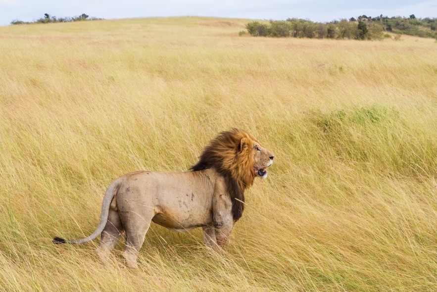

Lioness on the Hunt
The African savannah reveals many secrets at dusk, and none is more powerful than the hunt of a lioness. Agile, silent, and strategic—she is nature's finest predator in motion.
This particular moment was captured in the Masai Mara. The golden hour light sculpted her silhouette as she moved through tall grasses, eyes locked on an impala in the distance.
Capturing Tension
- Use a long lens to observe from afar without intrusion.
- Track her movement patiently—avoid sudden motion or sound.
- Focus on her eyes: it tells the story of anticipation.
Being present for such a moment is a reminder that every photo is not just light and pixels—but a story of instinct, survival, and grace.